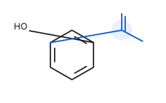
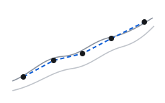
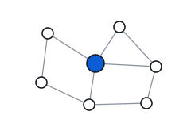

Start with a passage.
Highlight the description you want to understand — a process, a place, a relationship.
Some ideas are easier to understand when you can see them. Turn a highlighted passage into a diagram, map or animation — right inside the text.
An interactive prototype. A reader-led approach.
The planets move around the Sun in their own orbits. Earth follows a path around the Sun, completing one revolution each year. Seeing that movement makes the relationship clearer.
A visual layer that follows the reader’s curiosity. You choose the passage; the context stays on the page.
Highlight the description you want to understand — a process, a place, a relationship.
The method pairs the passage with a suitable visual form, from a diagram to a map.
Explore the visual inline, then return to the text without switching tabs.
A taxonomy spanning science, history, literature and beyond. Explore where the method could fit.

Molecular structures, reactions and processes, explored alongside the explanation.

Routes, landscapes and spatial relationships that give a passage a sense of place.

Character relationships, timelines and the structures that hold a story together.
Explore a pilot, discuss the architecture, or see what this approach could bring to your readers.